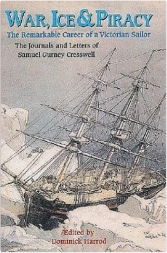
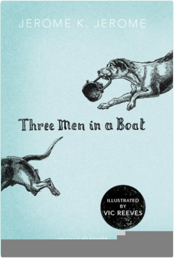

Quantitative Chemical AnalysisDaniel C. Harris  Dan Harris's Quantitative Chemical Analysis continues to be the most widely used textbook for analytical chemistry. It offers consistently modern portrait of the tools and techniques of chemical analysis, incorporating real data, spreadsheets, and a wealth of applications, all presented in a witty, personable style that engages students without compromising the principles and depth necessary for a thorough and practical understanding. War, Ice & Piracy: The Remarkable Career of a Victorian SailorDominic Harrod The era of the 'Pax Britannic' was anything but peaceful for many Royal Navy officers. But few saw as much active service as Samuel Gurney Cresswell, who contrived to fight in the Baltic campaign of the misnamed 'Crimean War' - the first time whole battle fleets maneuvered and fought under steam power - and to achieve fame as an Arctic explorer (he is credited with being the first to traverse the much sought-after North West Passage, as the result of a truly epic sledging trip form the trapped HMS Investigator in 1853). As his career advanced, he rose to sea-going command, and played his part in the imperial coercion of China, which included amphibious operations and the suppression of piracy in the South China Sea. Throughout his action-packed service, he always found time to keep journals and to correspond with his family. He was an acute observer of the closed world of the Victorian navy, as well as the exotic climes he was privileged to visit, and his lively first-hand accounts form the raw material for this book. Like many contemporary sailor he could also express his observations in competent drawings and watercolors, but Cresswell's skill was of a higher order: indeed, he was summoned to the Palace to present his Arctic sketches to Queen Victoria, and they were eventually issued as lithographs. However, most were never published and appear here for the first time. This book follows Cresswell's career through his own journals and letters. Family Circle Best of Kids Cooking Spiral BoundMary Pat Fergus / Rosalie Higson 12 Inch Spiral Bound Paperback., 112 pages with index. Printed on very heavy paper, almost like cardboard. Lots of Color pictures. Es Geschah an Der Mauer / It Happened at the Wall/Cela s'est passe au murRainer Hildebrandt A documentation in pictures of the border enclosing West Berlin; its development from the "13th of August, 1961" to the "9th of November, 1989", and most important events. Fundamental Statistics for the Behavioral SciencesDavid C. Howell David Howell's practical approach focuses on the context of statistics in behavioral research, with an emphasis on looking at data before jumping into a test. This provides students with an understanding of the logic behind the statistics: why and how certain methods are used rather than just doing techniques by rote. Students move beyond number crunching to discover the meaning of statistical results and how they relate to the research questions being asked. FUNDAMENTAL STATISTICS FOR THE BEHAVIORAL SCIENCES contains an abundance of real data and research studies as a base and moves through an analysis of data. Three Men in a BoatJerome K. Jerome What could be more relaxing than a refreshing holiday on the river with your two best friends and faithful canine companion, Montmorency? However, as J. discovers, there is more to life on the waves than meets the eyeincluding navigational challenges, culinary disasters, and heroic battles with swans, kettles, and tins of pineapple. Jerome K. Jerome’s delightful novel has kept readers smiling for years and his prose has found a perfect partner in Vic Reeves’s glorious and witty illustrations. |
 Made with Delicious Library
Made with Delicious LibrarySpringfield, State zipflap congrotus delicious library Doddridge, Edward